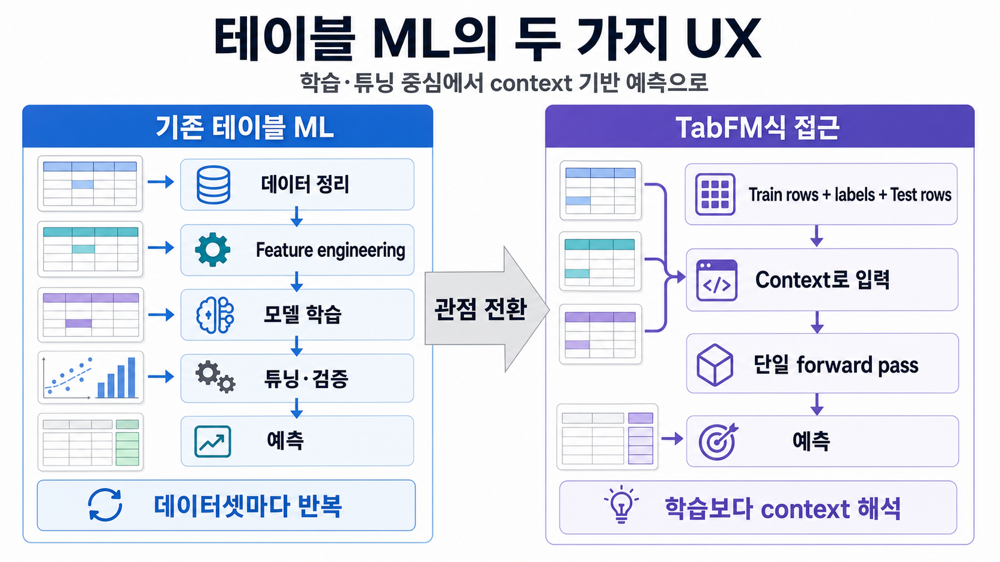
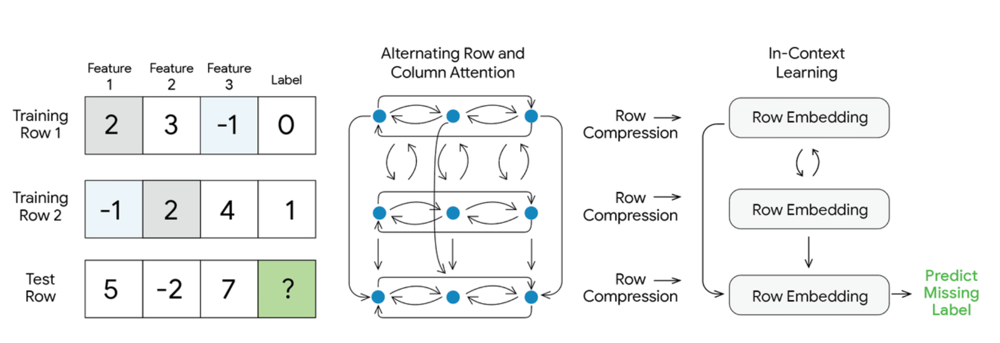
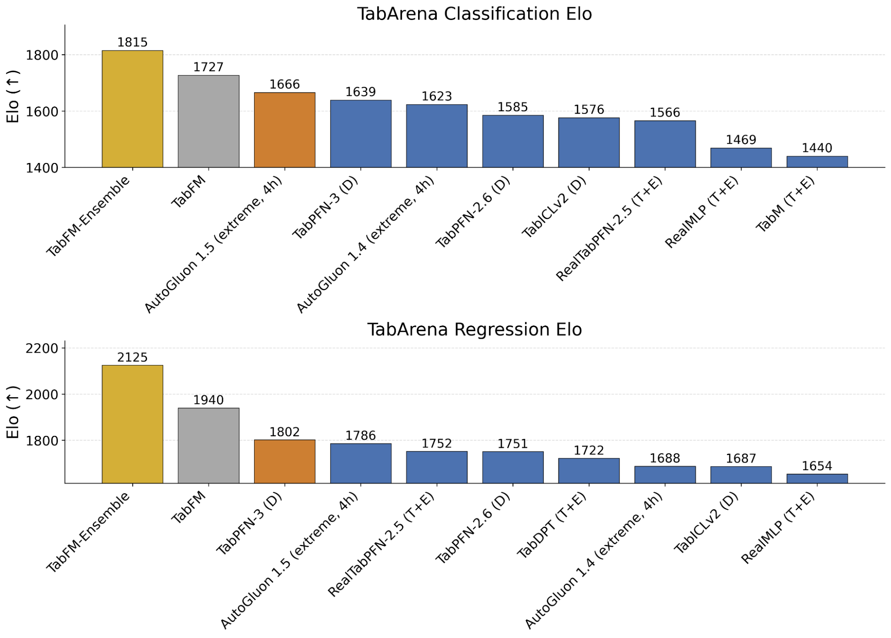

테이블 데이터에도 GPT 같은 모델이 올까? Google TabFM 쉽게 보기
요즘 “foundation model”이라는 말은 주로 텍스트와 이미지에서 들립니다. 글을 쓰고, 이미지를 만들고, 긴 문서를 읽는 모델은 빠르게 익숙해졌습니다. 그런데 기업 예측 업무의 많은 부분을 차지하는 테이블 데이터는 여전히 조금 다른 세계에 남아 있습니다. 데이터를 정리하고, feature를 만들고, XGBoost나 LightGBM 같은 모델을 학습하고, 튜닝하고, 검증하는 방식입니다.
Google Research가 공개한 TabFM은 이 흐름에 다른 질문을 던집니다.
테이블 데이터도 매번 새로 학습할 대상이 아니라, 모델이 읽어야 할 context로 볼 수 있지 않을까?
이 글에서는 TabFM을 “XGBoost를 대체할 새 모델”로 보기보다, 테이블 ML의 사용 방식이 어떻게 바뀔 수 있는지 보여주는 실험으로 살펴보려고 합니다. 결론부터 말하면, TabFM은 당장 기존 GBDT 계열 모델을 밀어낸다기보다 테이블 예측을 학습·튜닝 중심에서 context 기반 예측으로도 바꿔볼 수 있다는 가능성을 보여주는 시도에 가깝다고 생각합니다.

그림: 기존 테이블 ML은 데이터셋마다 학습·튜닝을 반복하는 흐름에 가깝고, TabFM식 접근은 train/test row를 context로 넣어 예측하는 UX에 가깝다.기존 테이블 ML은 강하지만, 반복이 많다
테이블 데이터는 기업 예측 업무의 기본 재료입니다. 고객 이탈 예측, 사기 탐지, 수요 예측, 신용 평가, 가격 추정, 리스크 스코어링 같은 문제는 대부분 row와 column으로 정리된 데이터에서 출발합니다.
이 영역에서는 오랫동안 XGBoost, LightGBM, CatBoost, Random Forest 같은 supervised tree 기반 모델이 강했습니다. 이유도 분명합니다. 상대적으로 적은 데이터에서도 잘 작동하고, 숫자형·범주형 feature를 실용적으로 다룰 수 있으며, 실무에서 검증된 운영 경험도 많습니다.
하지만 실무에서 피로를 만드는 지점은 모델 성능 그 자체만은 아닙니다. 새 데이터셋이 올 때마다 비슷한 과정을 다시 밟아야 한다는 점이 더 큰 비용이 됩니다.
- 결측치와 이상치를 처리하고
- 범주형 변수를 인코딩하고
- 도메인 feature를 만들고
- 모델을 고르고
- hyperparameter를 튜닝하고
- cross-validation으로 검증하고
- 배포 후 다시 모니터링합니다
Google Research 글도 이 지점을 병목으로 봅니다. XGBoost를 한 번 .fit() 하는 일이 어려운 것이 아니라, 그 앞뒤에 붙는 반복적인 feature engineering과 tuning 과정이 비용이라는 것입니다.
그래서 TabFM이 던지는 질문은 “더 강한 모델을 하나 더 만들 수 있는가”에 그치지 않습니다. “데이터셋이 바뀔 때마다 매번 모델링 프로젝트를 다시 시작해야 하는가”에 더 가깝습니다.
TabFM의 핵심: 테이블을 context로 읽는다
TabFM은 이름 그대로 tabular foundation model을 지향합니다. Google Research의 설명에 따르면 TabFM은 classification과 regression을 위한 zero-shot foundation model입니다.
핵심 아이디어는 단순합니다. 모델을 새로 맞추는 대신, 모델에게 예시와 문제를 함께 보여주는 것입니다.
기존 방식에서는 새 데이터셋이 생기면 그 데이터셋에 맞춰 모델 parameter를 학습합니다.
새 데이터셋 → 전처리/feature engineering → 모델 학습/튜닝 → 예측TabFM은 이 문제를 in-context learning으로 바꿉니다.
historical train rows + labels + target test rows
→ 하나의 context
→ 모델이 row/column 관계를 inference time에 해석
→ prediction즉, 모델 weight를 매번 업데이트하지 않고, train row와 test row를 하나의 입력 context로 넣어 예측하게 만드는 방식입니다. 비유하자면 “이런 예시들이 있고, 이제 이 row의 값을 맞혀봐”라는 문제를 테이블 형태로 주는 셈입니다.
이 점에서 TabFM은 LLM의 zero-shot 또는 in-context learning과 닮아 있습니다. 다만 TabFM을 LLM과 동일한 모델로 보면 안 됩니다. 텍스트를 생성하는 모델이 아니라, 테이블 형태의 classification/regression을 풀기 위해 설계된 모델입니다.
테이블은 문장처럼 한 줄로 읽을 수 없다
여기서 한 가지 오해를 피해야 합니다. TabFM은 단순히 테이블을 문자열로 바꿔서 LLM에 넣는 접근이 아닙니다. 테이블 데이터는 생각보다 다루기 어렵습니다.
일반적인 language model은 1차원 sequence를 처리합니다. 문장은 왼쪽에서 오른쪽으로 이어지고, 단어 순서가 의미에 큰 영향을 줍니다. 반면 테이블은 다릅니다.
- row 순서를 바꿔도 데이터셋의 의미가 바뀌지 않는 경우가 많고
- column 순서를 바꿔도 본질은 유지되며
- 숫자형, 범주형, 혼합 feature가 함께 있고
- feature 간 interaction이 예측 성능에 중요합니다
그래서 테이블은 단순히 “문자열로 펼쳐서 language model에 넣으면 되는” 데이터가 아닙니다.
Google Research 글은 TabFM이 TabPFN, TabICL 같은 선행 접근의 장점을 결합한 hybrid design을 쓴다고 설명합니다. 원문 기준으로는 row와 column 방향의 attention, row compression, compressed row representation 위에서의 in-context learning이 핵심 구성으로 소개됩니다.
여기서 중요한 점은 세부 구조 자체보다 방향입니다. TabFM은 테이블을 단순한 feature vector 묶음으로만 보지 않고, row와 column 사이의 관계를 context 안에서 해석하려고 합니다.

그림: TabFM architecture. train row와 test row를 함께 context로 보고, row/column attention → row compression → in-context learning으로 label을 예측하는 흐름을 보여준다. 출처: Google Research Blog.실제 기업 테이블 데이터가 부족한 문제를 synthetic data로 우회한다
TabFM에서 또 하나 흥미로운 부분은 모델 구조만이 아니라 학습 데이터입니다.
foundation model을 만들려면 대규모의 다양한 데이터가 필요합니다. 텍스트나 이미지는 공개 웹 데이터가 많습니다. 하지만 기업용 테이블 데이터는 사정이 다릅니다.
산업용 테이블은 보통 다음 특징을 갖습니다.
- schema가 회사마다 다르고
- 비공개 업무 로직이 섞여 있으며
- 개인정보나 민감정보를 포함할 수 있고
- 공개 데이터셋으로 대규모 수집하기 어렵습니다
Google Research 글에 따르면 TabFM은 이 문제를 대규모 synthetic table pretraining으로 우회합니다. structural causal model과 다양한 random function을 이용해 수많은 synthetic dataset을 만들고, 그 위에서 모델을 학습시키는 방식입니다.
이 지점은 TabFM 자체를 넘어 더 넓은 패턴으로 볼 수 있습니다. 공개 데이터를 대량으로 모으기 어려운 도메인에서는 실제 데이터를 그대로 모으는 대신, 도메인의 구조적 생성 과정을 흉내 내는 synthetic corpus를 만들어 foundation model을 학습시키려는 시도가 늘어날 수 있습니다. 테이블 ML에서 foundation model을 만들려면 “모델 구조”만큼이나 “어떤 세계를 학습 데이터로 보여줄 것인가”가 중요해지는 셈입니다.
성능은 흥미롭지만, 과장해서 읽으면 안 된다
Google은 TabFM을 TabArena benchmark에서 평가했다고 설명합니다. 원문 기준으로 TabArena는 classification dataset 38개, regression dataset 13개를 포함하고, Elo score 기반 head-to-head 방식으로 모델을 비교합니다.
Google Research는 TabFM이 TabArena에서 튜닝된 전통 ML 모델들과 경쟁하거나 일부 설정에서는 앞서는 결과를 보였다고 소개합니다. 이 결과는 분명 흥미롭습니다. 다만 이 글에서 가장 조심해야 할 지점도 여기입니다. 여기서 바로 “XGBoost가 끝났다”고 말하면 과장입니다.
먼저, TabArena는 living benchmark입니다. 2026년 7월 1일 확인 기준으로는 흥미로운 결과지만, leaderboard의 수치와 순위는 시간이 지나며 바뀔 수 있습니다. 따라서 특정 시점의 순위를 고정된 결론처럼 말하기보다, “현재 공개된 benchmark에서 이런 신호가 보인다” 정도로 읽는 편이 안전합니다.
또 하나 중요한 구분이 있습니다. TabFM과 TabFM-Ensemble은 같은 것으로 읽으면 안 됩니다. Google Research Blog 기준으로 TabFM-Ensemble은 32-way ensemble, feature crosses/SVD, NNLS, classification task의 Platt scaling을 포함한 구성입니다. 따라서 ensemble 결과를 기본 TabFM 단일 모델의 성능처럼 말하면 안 됩니다.

그림: Google Research Blog에 공개된 TabArena 결과 예시. 2026년 7월 1일 확인 기준의 참고 자료이며, TabArena는 living benchmark이므로 수치와 순위는 바뀔 수 있다.실무에서 봐야 할 질문도 benchmark 순위보다 많습니다.
- 잘 튜닝한 XGBoost, LightGBM, CatBoost와 비교하면 어떤가?
- 데이터 크기별 성능은 어떻게 달라지는가?
- high-cardinality categorical feature에서도 잘 버티는가?
- dirty schema, missing value, out-of-distribution table에 강한가?
- inference latency와 cost는 감당 가능한가?
- calibration은 충분히 믿을 만한가?
- feature importance나 설명가능성이 필요한 업무에서 쓸 수 있는가?
- HF model artifact / TabFM Model license가 실제 사용 목적과 맞는가?
이 질문에 답하기 전까지 TabFM은 “대체재”라기보다 “실험해볼 만한 새 baseline 후보”에 더 가깝습니다.
라이선스도 조심해서 봐야 한다
성능만큼 현실적인 제약도 있습니다. 공개 자료를 볼 때 특히 주의할 부분은 license입니다.
GitHub repository의 code license는 Apache-2.0으로 확인됩니다. 하지만 Hugging Face에 공개된 google/tabfm-1.0.0-pytorch model card는 tabfm-non-commercial-v1.0 license를 표시하고 있습니다.
해당 license는 HF에 공개된 TabFM Model artifact를 non-commercial, non-production use로 제공한다고 설명합니다. 다시 말해 code license만 보고 상용 production에 바로 사용할 수 있다고 판단하면 안 됩니다.
실무 적용을 검토한다면 최소한 다음을 분리해서 봐야 합니다.
- GitHub code license
- Hugging Face에 공개된 TabFM Model license
- inference code, parameters, model artifact 등 TabFM Model 구성요소의 사용 조건
- commercial license 필요 여부
- 운영 시스템 또는 최종 사용자 접점에서의 사용 가능성
특히 회사 제품, 고객 산출물, 수익화 서비스, 운영 의사결정 파이프라인에 직접 넣는 용도라면 별도 법무/라이선스 확인이 필요합니다.
실무에서는 어디에 먼저 놓아볼 수 있을까?
그렇다면 지금 단계에서 TabFM은 어디에 놓아볼 수 있을까요?
가장 자연스러운 위치는 “최종 모델”보다 빠른 baseline입니다. 데이터 과학자가 feature engineering과 tuning에 들어가기 전에, 이 데이터셋이 어느 정도 예측 가능한지 빠르게 감을 보는 용도입니다.
예를 들면 다음과 같은 상황입니다.
- 새 테이블 데이터셋의 feasibility를 빠르게 보고 싶을 때
- feature engineering 전 rough baseline이 필요할 때
- AutoML을 돌리기 전에 초기 성능 감을 보고 싶을 때
- 여러 데이터셋을 빠르게 훑어야 할 때
- 기존 GBDT 모델과 disagreement가 큰 case를 찾고 싶을 때
Google이 BigQuery AI.PREDICT 통합을 예고한 점도 이 방향과 맞닿아 있습니다. 향후 기업 데이터 웨어하우스에 있는 테이블 데이터에 대해 SQL 한 줄로 classification/regression을 호출할 수 있게 된다면, 예측 모델의 UX는 꽤 달라질 수 있습니다.
다만 이 역시 현재 시점에서는 조심해서 써야 합니다. 실제 availability, region, pricing, quota, production 사용 조건은 Google Cloud 문서 기준으로 별도 확인이 필요합니다. “SQL-native prediction UX로 갈 수 있다”는 방향성으로 이해하는 편이 안전합니다.
결론: XGBoost의 종말보다, 테이블 ML UX 변화의 신호
TabFM을 가장 과장해서 읽는 방법은 “이제 XGBoost는 필요 없다”고 말하는 것입니다. 하지만 지금 단계에서 그 결론은 성급합니다.
TabFM은 XGBoost를 당장 대체하는 모델이라기보다, 테이블 ML에도 foundation model식 UX가 들어올 수 있다는 신호에 가깝습니다. 성능, 비용, latency, 설명가능성, 라이선스, governance를 모두 검증해야 하지만, 방향 자체는 흥미롭습니다.
앞으로의 질문은 단순히 “leaderboard에서 누가 이겼는가”만은 아닐 것 같습니다. 테이블 예측을 매번 학습·튜닝하는 프로젝트로 볼 것인지, 아니면 기업 데이터 인프라 안에서 context 기반으로 호출하는 기능으로 볼 것인지. TabFM은 그 질문을 꽤 선명하게 보여주는 사례입니다.
참고 자료
- Google Research Blog, “Introducing TabFM: A zero-shot foundation model for tabular data”
- GitHub:
google-research/tabfm - Hugging Face:
google/tabfm-1.0.0-pytorch - TabArena leaderboard